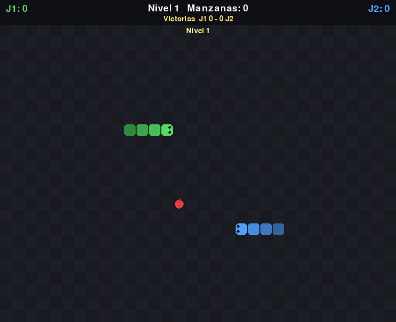

- Come manzanas para crecer sin chocar con paredes, obstáculos, tu cola ni la otra serpiente.
- Cada 5 manzanas sube el nivel y cambian los obstáculos: 5 niveles dibujados en
niveles.txt. - Power-ups que aparecen y se van: R rayo (rápido y doble puntos), T tortuga (lento), E estrella (x3), X tijeras (cola más corta), F fantasma (atraviesas paredes).
- Con 1 jugador guarda el récord en
record.txt; con 2, gana el que no choca y lleva el marcador de victorias.
Necesita: Python 3 + pygame · Linux, Windows y Mac
⬇ Descargar .zip (9 KB) 🎮 Jugar en el navegador▶️ Cómo jugar
- Descarga y descomprime el zip.
- Instala pygame:
pip install pygame - Corre
python3 serpiente.py(en Windows:python serpiente.py; en Linux/Mac también sirve./jugar.sh).
🎮 Controles
| 1 / 2 o arriba/abajo + ESPACIO | elegir jugadores en el menú |
| Flechas | Jugador 1 |
| W A S D | Jugador 2 |
| ESPACIO | volver a jugar |
| R | menú |
| ESC | salir |
⌨️ Cambiar los controles
Abre controles.txt (está junto a serpiente.py) y cambia la tecla después del =. Así viene de fábrica:
j1_arriba = up j1_abajo = down j1_izquierda = left j1_derecha = right j2_arriba = w j2_abajo = s j2_izquierda = a j2_derecha = d continuar = space reiniciar = r salir = escape
Nombres válidos: letras (a, b...), flechas (up, down, left, right), space, return, tab, left shift, left ctrl y números. Si escribes una tecla que no existe, el juego avisa y usa la de siempre.
✏️ Haz tu propio nivel
Los niveles están en niveles.txt (5 dibujos de 32 x 24, separados por una línea vacía). Son dibujos de texto: cada letra es un cuadrito.
. | casilla libre |
# | obstáculo |
Edita el dibujo, guarda, y corre: python3 serpiente.py
- Agrega un dibujo más al final del archivo (con su línea vacía antes) y tendrás un nivel 6.
- Deja libre el centro: ahí salen las serpientes.